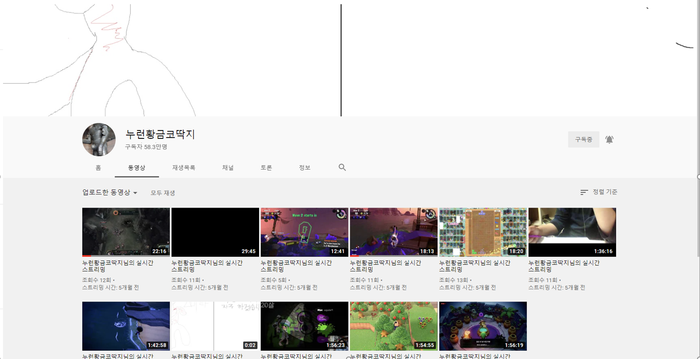

특징
“누런황금코딱지”, 본명은 고르덴 스눕푸스(Goruden snoopus), 생일은 2004.03.01., 요즘 떠오르는 스트리머이다. 현재 그의 구독자수는 약 50만명으로 앞으로 이벤트도 할 계획이라고 밝혔다.
그의 방송 플랫폼은 유튜브이다. 그의 연 매출은 본인피셜 한화로 약 22억으로 수 많은 광고를 찍은 탓에 버는 것 같다.
그의 방송 주 컨텐츠는 스위치 게임, 스팀 게임 그리고 study with me 등으로 시청자와 소통하며 공포게임과 각종 멀티플레이 게임을 지향하는 편이다.
그가 한 게임으로 대표적으로 ‘동물의 숲’, ‘떠도는 밤“’, 스플래툰, ‘젤다 꿈꾸는 섬’, ‘테트리스’ 그리고 ‘리그오브레전드’ 등이 있다.
그는 시청자의 말 한마디 모두 놓치지 않고 대답을 하는 편이며, 항상 그의 방송은 순식간에 모여드는 수 많은 시청자들 때문에 서버관리가 가장 우선 순위이다.
또한, 한 시청자는 그와 함께 스터디 윗 미를 하여 3달만 공부하여 단번에 공무원시험에 합격하였다고 한다.
그의 닉네임 누런황금코딱지는 그가 어릴적에 그의 콧속에서 우연히 황금색의 빛나는 코딱지를 발견한 것을 계기로 지어졌다고 한다. 나중에 그 코딱지는 ”포브스 선정, 올 한해의 가장 빛나는 물건”으로 인터넷에 한창 논란거리였다.
 
그의 특유의 말투와 빼어난 외모는 방송 재미의 핵심 요소이다.
실제로, 그의 방송을 구경하던 유명 전 프로게이머 ‘데이지와 블루’는 너무 재미난 나머지 배탈이 나서 병원에 실려가곤 하였다.
TMI) 그의 열혈 시청자팬 중에서 “찌야니”는 멋있는 사람이다 ><. 그의 방송은 욕을 사용하는 일이 거의 전무하여 “포브스 선정, 부모님 앞에서 틀 수 있는 가장 유익한 방송”으로 꼽히곤 했다.